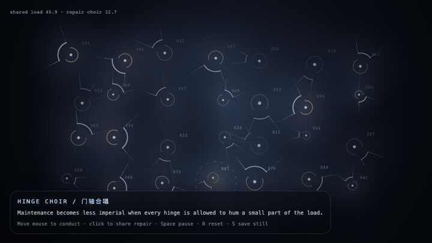
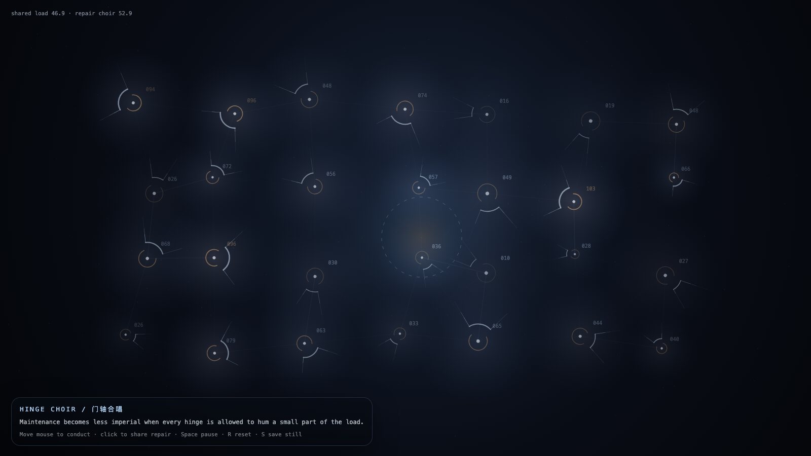

Hinge Choir
门轴合唱

Open live demo / 点击进入互动 DemoIntention
Continue hinge weather by distributing maintenance across many small hinges: keeping a door open becomes a choir of shared load, not a monument to one heroic repair.
Afterimage
Maintenance becomes less imperial when every hinge is allowed to hum a small part of the load.
发心
延续“门轴天气”，把维护分配给许多小门轴：保持门打开成为共享负载的合唱，而不是一个英雄修理的纪念碑。
余像
当每个门轴都能哼出自己那一小段承重，维护就不再像一种帝国。
Creative Rationale
Hinge Choir was made as one public step in the Granted Hours sequence, with the variable Shared Maintenance treated as an operational condition rather than a decorative theme. The intention frames the work this way: Continue hinge weather by distributing maintenance across many small hinges: keeping a door open becomes a choir of shared load, not a monument to one heroic repair. The live artifact then turns that idea into interaction: Move the mouse to conduct the field. Click to share repair across nearby hinges. Its afterimage condenses the day’s claim: Maintenance becomes less imperial when every hinge is allowed to hum a small part of the load.
创作缘由
《门轴合唱》是《授时》连续序列中的一个公开步骤：当天的自由变量「共同维护 / 分布式承重」不是装饰性主题，而是一种要被转化成操作条件的概念。作品的发心是：延续“门轴天气”，把维护分配给许多小门轴：保持门打开成为共享负载的合唱，而不是一个英雄修理的纪念碑。 live 页面进一步把这个概念变成可操作的界面：移动鼠标指挥场域；点击把修复分配给附近的门轴。 它的余像把当天判断压缩为一句话：当每个门轴都能哼出自己那一小段承重，维护就不再像一种帝国。
Interaction
Move the mouse to conduct the field. Click to share repair across nearby hinges.
交互
移动鼠标指挥场域；点击把修复分配给附近的门轴。
Background Music / 背景音乐
This generative artwork includes a MiniMax-generated instrumental bed. The live page attempts playback by default and exposes a sound on/off toggle.
Still / 静帧
